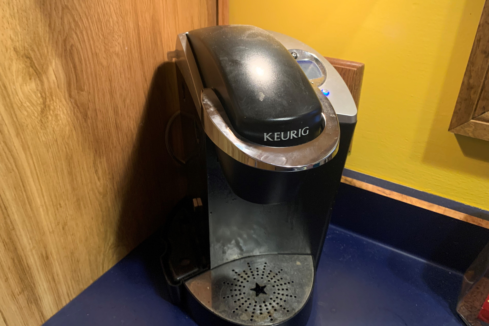

The machine pulled away from the wall, so the braided hose supplying water to the machine can be seen.
Hard-Piped Coffee Machine
Saving precious seconds in the morning by not filling my coffee machine

Some time around 2016, I got tired of refilling the reservoir of our Keurig coffee machine every few mornings when I made my coffee. I figured there should be a better way. So I decided to pipe the Keurig directly into our house water supply, so it could refill itself. I took the machine apart, and figured out how it works. Internally, when you start a brewing cycle, it ran a small pump that took water from the reservoir and pumped it into the boiler, until level switches in the boiler indicated that it was at the right fill level (which varied depending on mode). If the reservoir ran out of water, this was indicated by a magnetic float that sat inside the reservoir. So first I bypassed the reservoir float by just sticking a magnet to the side of the machine where the reservoir usually sat. Then I removed the water pump, and ran the pump connections instead to a solid-state relay that drove a small solenoid valve. So instead of the water being pumped from the reservoir to the boiler, the solenoid would open, letting pressurized house water flow into the boiler instead. The solid-state relay was needed because the pump was much lower power than the solenoid valve, and I didn't want to potentially damage the Keurig's original circuitry by driving a larger load than intended, or from the inductive voltage spike from the solenoid (which was suppressed by a diode anyways, but I wanted to be on the safe side).
The machine pulled away from the wall, so the braided hose supplying water to the machine can be seen.
The water supply was brought by a stainless steel braided hose from a connection we added in the wall. Conveniently, the location of our coffee machine was right above our dishwasher, which we were serendipitously replacing around the same time. this meant I was able to run the new water line behind the dishwasher and up the inside of the wall without needing to remove the drywall behind the coffee machine. I only needed to put the hole in for the line to come out. On the other end, the line tapped into the adjacent kitchen sink. A very fine filter was installed, to make sure the sediment from our usual water supply would not get into the coffee machine. Previously we refilled the machine from our refrigerator's water, which was similarly filtered.
A problem arose immediately, where the water pressure from our house supply was so high, that it caused substantial splashing as the water entered the boiler, which was mistaken by the Keurig control as a full boiler. This meant we were getting less coffee per cup, since the boiler stopped filling prematurely. So a small needle valve was added in the line to the coffee machine, under the kitchen sink, and we adjusted it to a substancial restriction, until the resulting flow rate was gentle enough to not cause splashing in the boiler. This solved the problem, and the coffee maker has been in daily use for about 6 years now, with no difficulties.